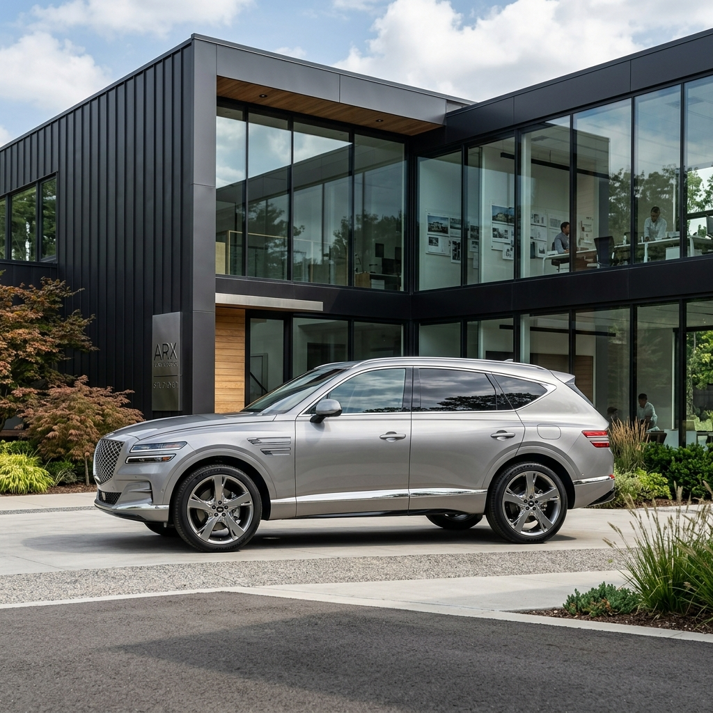
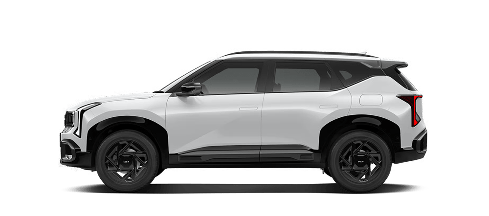
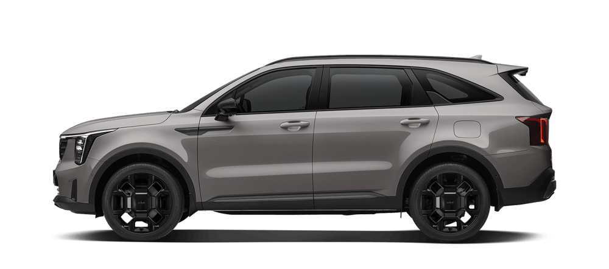

▲ 제네시스 최초의 럭셔리 하이브리드 파워트레인을 품게 될 신형 GV80 ⓒ 카프리즘 생성 이미지
전기차 시장의 캐즘(일시적 수요 둔화) 현상이 장기화되면서, 현실적이고 합리적인 선택지인 하이브리드(HEV)와 패밀리카의 대명사인 SUV로 소비자의 눈길이 쏠리고 있습니다. 특히 2026년 하반기에는 오랫동안 시장에서 검증된 강자들의 완전변경 및 부분변경 모델이 쏟아질 예정입니다.
새 차를 바로 사려다가도 "조금만 기다리면 신형이 나오는데 지금 사면 손해 아닐까?" 하는 고민에 빠진 예비 구매자들을 위해, 하반기 자동차 시장의 트렌드를 좌우할 핵심 신차 5종의 스펙과 구매 가이드라인을 상세히 정리해 드립니다.
1. 기아 셀토스 하이브리드 (3세대) — 드디어 만나는 소형 SUV 끝판왕

▲ 기아 셀토스 공식 이미지. 마침내 하이브리드 심장을 달았다. ⓒ 기아 공식
국내 소형 및 준중형 SUV 시장의 절대강자인 기아 셀토스가 드디어 하이브리드 심장을 달았습니다. 2026년 초 전격 출시된 풀체인지 모델은 기존 가솔린 터보에 이어 1.6 가솔린 터보 하이브리드 라인업을 신설했습니다.
스타맵 시그니처 라이팅과 강인한 오퍼짓 유나이티드 디자인을 반영하여 체급을 뛰어넘는 웅장함을 자랑합니다. 특히 16인치 휠 기준 19.5km/L에 달하는 동급 최고 수준의 공인 복합 연비는 유류비 부담을 획기적으로 낮췄습니다.
💡 구매 가이드: 소형차 특유의 실용성과 하이브리드의 연비를 극대화하고 싶다면 망설일 이유가 없습니다. 기아 소형 SUV 라인업 중 가장 풍부한 공간감을 제공하기 때문에 생애 첫 차 혹은 도심형 세컨드카 구매를 원하신다면 당장 선택하기 좋은 시점입니다.
2. 제네시스 GV80 하이브리드 — 럭셔리에 경제성을 더하다
수입 프리미엄 SUV와 경쟁하는 제네시스의 플래그십 SUV GV80이 브랜드 역사상 최초로 가솔린 터보 하이브리드 엔진을 탑재합니다. 업계 소식에 따르면, GV80 하이브리드는 2026년 9월 본격적인 양산을 앞두고 있습니다.
새로운 하이브리드 시스템은 2.5 가솔린 터보 엔진 기반으로 설계되어 기존의 부족했던 초반 가속 토크를 모터가 메워주며 프리미엄 브랜드 특유의 부드럽고 묵직한 주행감을 선사할 예정입니다. 그동안 "GV80의 승차감과 정숙성은 만족스럽지만 연비가 아쉽다"고 평가했던 소비자들의 수요를 완벽하게 만족시킬 메커니즘을 가졌습니다.
💡 구매 가이드: 프리미엄 SUV 시장에서 9000만 원~1억 원대 럭셔리카를 타면서도 기름값 스트레스를 피하고 싶다면, 올 하반기 예정된 사전계약 일정을 강력 추천합니다. 다만, 신규 하이브리드 엔진이 탑재되는 만큼 초기 대기 기간이 1년 이상으로 길어질 수 있으므로 빠르게 예약을 준비하는 편이 좋습니다.
3. 현대 그랜저 페이스리프트 — 고급 세단의 표준, 살까 기다릴까?
▲ 현대 더 뉴 그랜저(페이스리프트). 전장을 확장하고 17인치 통합 디스플레이를 갖췄다. ⓒ 현대자동차 공식
2026년 5월 출시된 현대차의 '더 뉴 그랜저(GN7 페이스리프트)'는 전면부 '샤크 노즈' 형상의 입체적인 메쉬 그릴과 최신 안드로이드 오토모티브 기반의 '플레오스 커넥트' 인포테인먼트 사양을 탑재하며 플래그십 세단 시장의 정점을 찍었습니다.
1.6 터보 하이브리드 시스템이 전체 계약 물량의 60% 이상을 차지할 만큼 그 인기와 신뢰도가 검증된 상태입니다. 기존 그랜저의 다소 밋밋했던 전면 디자인을 스포티하고 세련되게 다듬었고, 실내 소음 및 편의 기술도 대폭 개선되었습니다.
💡 구매 가이드: 그랜저는 완성 단계에 도달했습니다. 만약 기존 7세대 초기형(GN7) 모델의 큰 폭의 할인을 노리고 있다면 중고차 또는 재고차 구매도 훌륭한 타이밍이지만, 인포테인먼트의 최적화와 더욱 고급스러운 주행감을 중시한다면 신형 페이스리프트 모델로 바로 진입하는 것을 권장합니다.
4. 현대 팰리세이드 하이브리드 — 압도적인 대형 패밀리 SUV의 정석
▲ 현대 팰리세이드 공식 이미지. 2.5T 하이브리드 탑재로 디젤을 완전 대체했다. ⓒ 현대자동차 공식
'디 올 뉴 팰리세이드(LX3)' 풀체인지는 이미 시장의 패밀리카 트렌드를 완벽하게 지배하고 있습니다. 기존의 2.2 디젤 모델을 영구적으로 단절하고, 새롭게 개발한 2.5 가솔린 터보 하이브리드 시스템을 전면으로 내세웠습니다.
박시(Boxy)하고 미래지향적인 전면 패밀리룩 디자인과 3열 공간의 거주성을 극대화하여 패밀리 SUV의 바이블 역할을 해내고 있습니다. 높은 배기량의 강력한 하이브리드 성능 덕분에 무거운 중량에도 여유로운 견인력과 부드러운 가속력을 보장합니다.
💡 구매 가이드: 3-4인 이상 다자녀 가정이거나 캠핑, 아웃도어 라이프스타일을 적극적으로 즐긴다면 팰리세이드 하이브리드는 현존 대체 불가능한 1위 선택지입니다. 구형 가솔린 모델(3.8L)의 고배기량 세금 부담이나 디젤 특유의 소음에서 벗어나 쾌적하고 넉넉한 공간을 지향한다면, 신형 2.5T 하이브리드를 기다릴 가치가 차고 넘칩니다.
5. 기아 쏘렌토 하이브리드 — 검증된 국민 패밀리카

▲ 기아 쏘렌토 하이브리드 공식 이미지. 국내 판매량 부동의 왕좌를 이어가고 있다. ⓒ 기아 공식
국내 하이브리드 SUV 판매량 1위에 빛나는 기아 쏘렌토 하이브리드는 트렌디한 타이거 페이스 디자인과 탄탄한 서스펜션 세팅을 바탕으로 여전히 막강한 인기를 끌고 있습니다.
셀토스보다 한층 여유로운 공간과 팰리세이드보다 기동성이 뛰어난 중형 사이즈로, 도심 주행과 아웃도어의 밸런스가 돋보입니다. 높은 중고차 잔존가치와 오랜 기간 개선되어 안정화된 파워트레인의 내구성은 큰 자산입니다.
💡 구매 가이드: 복잡하고 긴 대기 시간이 싫고, 가장 검증된 대중적이고 탄탄한 차를 사고 싶다면 주저 없이 쏘렌토 하이브리드를 선택하면 됩니다. 모험을 피하고 확실한 시장 피드백을 원하시는 스마트 컨슈머에게 가장 최적화된 패키징입니다.